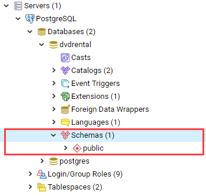
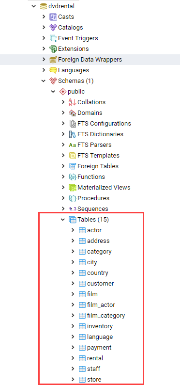
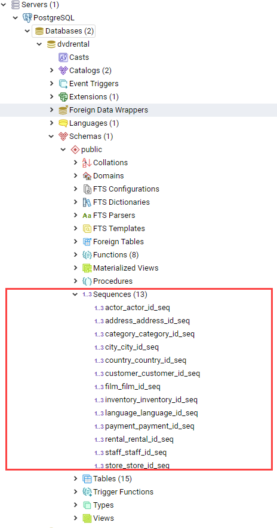

Виды объектов БД
Объектами баз данных называют их структурные составляющие, такие, как схемы (schema), таблицы (table), представления (view), функции (function), процедуры (procedure), триггеры (trigger), последовательности (sequence), ограничения (constraints). Они выполняют различные функции по хранению и обработке информации.
Схемы
Схема (schema) — это логический контейнер таблиц и других объектов внутри базы данных, причем каждая база данных может иметь одну или несколько схем.
Схемы применяются, чтобы объединить объекты базы данных в логические группы для облегчения управления ими и избежания конфликта имен различных приложений внутри схемы.

Создание схемы (СREATE SCHEMA)
Для создания схемы необходимо использовать следующий запрос:
CREATE SCHEMA имя_схемы;Таблица, при создании без указания схемы, автоматически помещается в схему public, для создания таблицы в определенной схеме, необходимо указать её имя:
CREATE TABLE имя_схемы.имя_таблицы ( ... );Часто бывает нужно создать схему, владельцем которой будет другой пользователь (это один из способов ограничения пользователей пространствами имён). Сделать это можно следующим образом:
CREATE SCHEMA имя_схемы AUTHORIZATION имя_пользователя;Возможно опустить имя схемы, в этом случае именем схемы станет имя пользователя. Схемы с именами, начинающимися с pg_, являются системными - пользователям не разрешено использовать такие имена.
CREATE SCHEMA IF NOT EXISTS имя_схемы AUTHORIZATION имя_пользователя;где IF NOT EXISTS означает не делать ничего (только выдать замечание), если схема с таким именем уже существует.
Пример, создание схемы, в которой сразу создаются таблица и представление:
CREATE SCHEMA hollywood
CREATE TABLE films (title text, release date, awards text[])
CREATE VIEW winners AS
SELECT title, release FROM films WHERE awards IS NOT NULL;Чтобы создать объекты в схеме или обратиться к ним, необходимо указать полное имя, состоящее из имён схемы и объекта, разделённых точкой:
схема.объектЕсть ещё более общий синтаксис
база_данных.схема.объектУдаление схемы (DROP SCHEMA)
Удалить схему, которая не содержит внутри себя объектов, можно следующим способом:
DROP SCHEMA имя_схемы;Удалить схему со всеми содержащимися в ней объектами:
DROP SCHEMA имя_схемы CASCADE;RESTRICT позволяет отказать в удалении схемы, если она содержит какие-либо объекты. Это поведение по умолчанию.
DROP SCHEMA имя_схемы RESTRICT;Изменение схемы (ALTER SCHEMA)
ALTER SCHEMA — позволяет изменить определение схемы.
ALTER SCHEMA имя RENAME TO новое_имя
ALTER SCHEMA имя OWNER TO { новый_владелец | CURRENT_USER | SESSION_USER }Параметры:
-
имя- имя существующей схемы. -
новое_имя- новое имя схемы. Новое имя не может начинаться сpg_, так как такие имена зарезервированы для системных схем. -
новый_владелец- новый владелец схемы.
Схемы и права
По умолчанию пользователь не может обращаться к объектам в чужих схемах. Чтобы изменить это, владелец схемы должен дать пользователю право USAGE для данной схемы. Чтобы пользователи могли использовать объекты схемы, может понадобиться назначить дополнительные права на уровне объектов.
Пользователю также можно разрешить создавать объекты в схеме, не принадлежащей ему. Для этого ему нужно дать право CREATE в требуемой схеме. Требуется помнить, что по умолчанию все имеют права CREATE и USAGE в схеме public. Благодаря этому все пользователи могут подключаться к заданной базе данных и создавать объекты в её схеме public.
Некоторые шаблоны использования позволяют запретить это:
REVOKE CREATE ON SCHEMA public FROM PUBLIC;Таблицы
Таблицы используются для хранения данных, в базе данных может находиться несколько таблиц.

Создание таблицы (CREATE TABLE)
Для создания таблицы используется команда CREATE TABLE. В этой команде необходимо указать как минимум имя новой таблицы и имена, типы данных каждого столбца.
Например:
CREATE TABLE my_first_table (
first_column text,
second_column integer
);Число столбцов в таблице не может быть бесконечным. Это число ограничивается максимумом в пределах`от 250 до 1600, в зависимости от типов столбцов. Однако, создавать таблицы с таким большим числом столбцов обычно не требуется, а если такая потребность возникает, это скорее признак сомнительного дизайна.
Удаление таблицы (DROP TABLE)
Если таблица больше не нужна, можно удалить её, выполнив следующую команду DROP TABLE:
DROP TABLE my_first_table;Изменение таблицы (ALTER TABLE)
ALTER TABLE меняет определение существующей таблицы.
ALTER TABLE [ IF EXISTS ] [ ONLY ] имя [ * ]
действие [, ... ]
ALTER TABLE [ IF EXISTS ] [ ONLY ] имя [ * ]
RENAME [ COLUMN ] имя_столбца TO новое_имя_столбца
ALTER TABLE [ IF EXISTS ] [ ONLY ] имя [ * ]
RENAME CONSTRAINT имя_ограничения TO имя_нового_ограничения
ALTER TABLE [ IF EXISTS ] имя
RENAME TO новое_имя
ALTER TABLE [ IF EXISTS ] имя
SET SCHEMA новая_схемаДействия могут быть различными, приведем несколько примеров:
ADD [ COLUMN ] [ IF NOT EXISTS ] имя_столбца тип_данных
[ COLLATE правило_сортировки ] [ ограничение_столбца [ ... ] ]
DROP [ COLUMN ] [ IF EXISTS ] имя_столбца [ RESTRICT | CASCADE ]
ADD ограничение_таблицы [ NOT VALID ]
DROP CONSTRAINT [ IF EXISTS ] имя_ограничения [ RESTRICT | CASCADE ]
DISABLE TRIGGER [ имя_триггера | ALL | USER ]
ENABLE TRIGGER [ имя_триггера | ALL | USER ]Представления (View)
Представления (View) - это именованные правила выборки данных. Они предназначены для извлечения данных из одной или нескольких таблиц, на которые основываются.
Еще можно сказать, что представление это виртуальная таблица, которая используется для упрощения сложных запросов и обеспечения безопасности для набора записей.

Преимущества представления:
-
Обеспечивают независимость пользовательских программ от изменения логической структуры базы данных.
-
Возможность различным пользователям по-разному видеть одни и те же данные.
-
Дополнительный механизм для управления санкционированным доступом. Представления защищают данные, так как могут дать доступ к части таблицы, а не ко всей таблице.
-
Повторное использование написанного запроса.
Создание представления (CREATE VIEW)
Предположим, что появилась необходимость вывести список из названий городов, но нет потребности каждый раз вводить весь запрос. Можно создать представление по данному запросу, фактически присвоить имя запросу, а затем обращаться к нему как к обычной таблице:
CREATE VIEW myview AS
SELECT name
FROM cities;Теперь получить список названий (name) всех городов можно через представление используя следующий запрос:
SELECT * FROM myview;Для изменения представления можно воспользоваться запросом:
OR REPLACECREATE OR REPLACE VIEW myview AS
SELECT name, id
FROM cities;Команда CREATE OR REPLACE VIEW действует подобным образом, но если представление с этим именем уже существует, оно заменяется.
Новый запрос должен выдавать те же столбцы, что выдавал запрос, ранее определённый для этого представления, (то есть, столбцы с такими же именами должны иметь те же типы данных и следовать в том же порядке), но может добавить несколько новых столбцов в конце списка.
Вычисления, в результате которых формируются столбцы представления, могут быть совершенно другими.
Это означает, что возникнет ошибка, если переопределить представление следующим образом:
CREATE OR REPLACE VIEW myview AS
SELECT id, name
FROM cities;
ERROR: ОШИБКА: изменить имя столбца "name" на "id" в представлении нельзяИли при попытке исключить столбец:
CREATE OR REPLACE VIEW myview AS
SELECT id
FROM cities;
ERROR: ОШИБКА: удалять столбцы из представления нельзяРассмотрим механизм создания представления поподробнее.
CREATE [ OR REPLACE ] [ TEMP | TEMPORARY ] [ RECURSIVE ] VIEW имя [ ( имя_столбца
[, ...] ) ]
[ WITH ( имя_параметра_представления [= значение_параметра_представления]
[, ... ] ) ]
AS запрос
[ WITH [ CASCADED | LOCAL ] CHECK OPTION ]Параметры:
-
TEMPORARYилиTEMP- с такими параметрами представление создаётся как временное. Временные представления автоматически удаляются в конце сеанса. Существующее постоянное представление с тем же именем не будет видно в текущем сеансе, пока существует временное, однако к нему можно обратиться, дополнив имя указанием схемы. Если в определении представления задействованы временные таблицы, представление так же создаётся как временное (вне зависимости от присутствия явного указанияTEMPORARY). -
RECURSIVE- создаёт рекурсивное представление. -
запрос- командаSELECTилиVALUES, которая выдаёт столбцы и строки представления. -
WITH [ CASCADED | LOCAL ] CHECK OPTION- это указание управляет поведением автоматически изменяемых представлений. Если оно присутствует, при выполнении операцийINSERTиUPDATEс этим представлением будет проверяться, удовлетворяют ли новые строки условию, определяющему представление (то есть, проверяется, будут ли новые строки видны через это представление). Если они не удовлетворяют условию, операция не будет выполнена. Если указаниеCHECK OPTIONотсутствует, командыINSERTиUPDATEсмогут создавать в этом представлении строки, которые не будут видны в нём.
Поддерживаются следующие варианты проверки:
-
LOCAL
Новые строки проверяются только по условиям, определённым непосредственно в самом представлении. Любые условия, определённые в нижележащих базовых представлениях, не проверяются (если только в них нет указания CHECK OPTION).
-
CASCADED
Новые строки проверяются по условиям данного представления и всех нижележащих базовых. Если указано CHECK OPTION, а LOCAL и CASCADED опущено, подразумевается указание CASCADED.
Удаление представления (DROP VIEW)
Удалить представление можно следующим образом:
DROP VIEW имя_представления;DROP VIEW имя_представления CASCADE;DROP VIEW имя_представления RESTRICT;Изменение определения представления (ALTER VIEW)
ALTER VIEW [ IF EXISTS ] имя ALTER [ COLUMN ] имя_столбца SET DEFAULT выражение
ALTER VIEW [ IF EXISTS ] имя ALTER [ COLUMN ] имя_столбца DROP DEFAULT
ALTER VIEW [ IF EXISTS ] имя OWNER TO { новый_владелец | CURRENT_USER | SESSION_USER }
ALTER VIEW [ IF EXISTS ] имя RENAME TO новое_имя
ALTER VIEW [ IF EXISTS ] имя SET SCHEMA новая_схема
ALTER VIEW [ IF EXISTS ] имя SET ( имя_параметра_представления
[= значение_параметра_представления] [, ... ] )
ALTER VIEW [ IF EXISTS ] имя RESET ( имя_параметра_представления [, ... ] )Выполнить ALTER VIEW может только владелец представления. Чтобы сменить схему представления, необходимо также иметь право CREATE в новой схеме. Чтобы сменить владельца, требуется также быть непосредственным или опосредованным членом новой роли, а эта роль должна иметь право CREATE в схеме представления.
Параметры:
-
имя- имя существующего представления (возможно, дополненное схемой). -
IF EXISTS- не считать ошибкой, если представление не существует. В этом случае будет выдано замечание. -
SET/DROP DEFAULT- эти формы устанавливают или удаляют значение по умолчанию в заданном столбце. Значение по умолчанию подставляется в командыINSERTиUPDATE, вносящие данные в представление, до применения каких-либо правил или триггеров в этом представлении. Таким образом, значения по умолчанию в представлении имеют приоритет перед значениями по умолчанию в нижележащих отношениях. -
новый_владелец- имя пользователя, назначаемого новым владельцем представления. -
новое_имя- новое имя представления. -
новая_схема- новая схема представления. -
SETиRESET- устанавливает или сбрасывает параметры представления.
Материализованное представление (matview)
Материализованное представление — это объект базы данных, который содержит результаты запроса.
Материализованное представление похоже на представление базы данных, за исключением того, что оно физически хранится на диске и обновляется вручную. Matview хранит результаты запроса в собственной табличной структуре, из которой можно запрашивать данные. Невозможно добавлять или удалять строки, но в остальное время он ведет себя как настоящая таблица.
| Что сравниваем | VIEW | MATVIEW |
|---|---|---|
Способ хранения |
VIEW никогда не сохраняется, он только отображается. |
Материализованное представление хранится на диске. |
Способ обновления |
Представление обновляется каждый раз, когда используется виртуальная таблица (представление). |
Материализованное представление должно обновляться вручную или с использованием триггеров. |
Скорость |
Медленная обработка. |
Быстрая обработка. |
Использованием памяти |
Просмотр не требует места в памяти. |
Материализованный вид использует пространство памяти. |
CREATE MATERIALIZED VIEW [ IF NOT EXISTS ] имя_таблицы
[ (имя_столбца [, ...] ) ]
[ WITH ( параметр_хранения [= значение] [, ... ] ) ]
[ TABLESPACE табл_пространство ]
AS запрос
[ WITH [ NO ] DATA ]Параметры:
-
IF NOT EXISTS- не считать ошибкой, если материализованное представление с таким именем уже существует. В этом случае будет выдано замечание. Заметьте, что нет никакой гарантии, что существующее материализованное представление как-то соотносится с тем, которое могло бы быть создано. -
имя_таблицы- имя создаваемого материализованного представления (возможно, дополненное схемой). -
имя_столбца- имя столбца в создаваемом материализованном представлении. Если имена столбцов не заданы явно, они определяются по именам столбцов результата запроса. -
WITH ( параметр_хранения [= значение] [, … ] )Это предложение задаёт дополнительные параметры хранения для создаваемого материализованного представления. Все параметры, которые поддерживаетCREATE TABLE, поддерживает иCREATE MATERIALIZED VIEW. -
TABLESPACE (табл_пространство)— имя табличного пространства, в котором будет создано материализованное представление. -
запрос- командыSELECTилиVALUES. Эти команды будут выполняться с ограничениями по безопасности. В частности, будут запрещены вызовы функций, которые сами создают временные таблицы.
Удаление материализованного представления (DROP MATERIALIZED VIEW)
DROP MATERIALIZED VIEW [ IF EXISTS ] имя [, ...] [ CASCADE | RESTRICT ]где
-
CASCADE- автоматически удалять объекты, зависящие от данного материализованного представления (например, другие материализованные или обычные представления), и, в свою очередь, все зависящие от них объекты. -
RESTRICT- отказать в удалении материализованного представления, если от него зависят какие-либо объекты. Это поведение по умолчанию.
Изменение материализованного представления (ALTER MATERIALIZED VIEW)
ALTER MATERIALIZED VIEW [ IF EXISTS ] имя
действие [, ... ]
ALTER MATERIALIZED VIEW имя
DEPENDS ON EXTENSION имя_расширения
ALTER MATERIALIZED VIEW [ IF EXISTS ] имя
RENAME [ COLUMN ] имя_столбца TO новое_имя_столбца
ALTER MATERIALIZED VIEW [ IF EXISTS ] имя
RENAME TO новое_имя
ALTER MATERIALIZED VIEW [ IF EXISTS ] имя
SET SCHEMA новая_схемаALTER [ COLUMN ] имя_столбца SET STATISTICS integer
ALTER [ COLUMN ] имя_столбца SET ( атрибут = значение [, ... ] )
ALTER [ COLUMN ] имя_столбца RESET ( атрибут [, ... ] )
SET ( параметр_хранения [= значение] [, ... ] )
RESET ( параметр_хранения [, ... ] )
OWNER TO { новый_владелец | CURRENT_USER | SESSION_USER }ALTER MATERIALIZED VIEW изменяет различные расширенные свойства существующего материализованного представления.
Выполнить ALTER MATERIALIZED VIEW может только владелец материализованного представления. Чтобы сменить схему материализованного представления, необходимо также иметь право CREATE в новой схеме. Чтобы сменить владельца, требуется также быть непосредственным или опосредованным членом новой роли, а эта роль должна иметь право CREATE в схеме материализованного представления.
Параметры:
-
имя- имя существующего материализованного представления (возможно, дополненное схемой). -
имя_столбца- имя нового или существующего столбца. -
имя_расширения- имя расширения, от которого будет зависеть материализованное представление. -
новое_имя_столбца- новое имя существующего столбца. -
новый_владелец- имя пользователя, назначаемого новым владельцем материализованного представления. -
новое_имя- новое имя материализованного представления. -
новая_схема- новая схема материализованного представления.
Замена содержимого материализованного представления (REFRESH MATERIALIZED VIEW)
REFRESH MATERIALIZED VIEW [ CONCURRENTLY ] имя
[ WITH [ NO ] DATA ]REFRESH MATERIALIZED VIEW полностью заменяет содержимое материализованного представления. Эту команду разрешено выполнять только владельцам материализованного представления. Старое его содержимое при этом аннулируется. Если добавлено указание WITH DATA (или нет никакого), нижележащий запрос выполняется и выдаёт новые данные, так что материализованное представление остаётся в сканируемом состоянии. Если указано WITH NO DATA, новые данные не выдаются, и оно оказывается в несканируемом состоянии. Указать CONCURRENTLY вместе с WITH NO DATA нельзя.
Параметры:
-
CONCURRENTLY- обновить материализованное представление, не блокируя параллельные выборки из него. Без данного параметра обновление, затрагивающее много строк, обычно задействует меньше ресурсов и выполнится быстрее, но может препятствовать чтению этого материализованного представления другими сеансами. При этом данный режим может быть быстрее при небольшом количестве строк. Данный параметр допускается, только если в материализованном представлении есть хотя бы один индексUNIQUE, построенный только по именам столбцов и включающий все строки (то есть это не должен быть индекс по выражению или индекс, содержащийWHERE). Этот параметр нельзя использовать, когда материализованное представление ещё не наполнено. Даже с этим параметром в один момент времени допускается только одно обновление (REFRESH) материализованного представления. -
имя- имя (возможно, дополненное схемой) материализованного представления, подлежащего обновлению.
Функции
Функция — это многократно используемый блок кода SQL, который возвращает скалярное значение списка записей.

Создание функции (CREATE FUNCTION)
Чтобы заменить текущее определение существующей функции, используется команда CREATE OR REPLACE FUNCTION. Но следует учесть, что она не позволяет изменить имя или аргументы функции (если попытаться сделать это, на самом деле будет создана новая, независимая функция). Кроме того, CREATE OR REPLACE FUNCTION не позволит изменить тип результата существующей функции. Чтобы сделать это, придётся удалить функцию и создать её заново. Если удалить и затем вновь создадать функцию, новая функция станет другой сущностью, отличной от старой - потребуется так же удалить существующие правила, представления, триггеры, ссылающиеся на старую функцию. Поэтому, чтобы изменить определение функции, сохраняя ссылающиеся на неё объекты, следует использовать CREATE OR REPLACE FUNCTION.
Владельцем функции становится создавший её пользователь. Чтобы создать функцию, необходимо иметь право USAGE для типов её аргументов и возвращаемого типа.
CREATE [ OR REPLACE ] FUNCTION
имя ( [ [ режим_аргумента ] [ имя_аргумента ] тип_аргумента [ { DEFAULT |
= } выражение_по_умолчанию ] [, ...] ] )
[ RETURNS тип_результата
| RETURNS TABLE ( имя_столбца тип_столбца [, ...] ) ]
{ LANGUAGE имя_языка
| TRANSFORM { FOR TYPE имя_типа } [, ... ]
| WINDOW
| { IMMUTABLE | STABLE | VOLATILE }
| [ NOT ] LEAKPROOF
| { CALLED ON NULL INPUT | RETURNS NULL ON NULL INPUT | STRICT }
| { [ EXTERNAL ] SECURITY INVOKER | [ EXTERNAL ] SECURITY DEFINER }
| PARALLEL { UNSAFE | RESTRICTED | SAFE }
| COST стоимость_выполнения
| ROWS строк_в_результате
| SUPPORT вспомогательная_функция
| SET параметр_конфигурации { TO значение | = значение | FROM CURRENT }
| AS 'определение'
| AS 'объектный_файл', 'объектный_символ'
} ...Основные параметры:
-
имя- имя создаваемой функции (возможно, дополненное схемой). -
режим_аргумента- режим аргумента:IN(входной),OUT(выходной),INOUT(входной и выходной) илиVARIADIC(переменный). По умолчанию подразумеваетсяIN. За единственным аргументомVARIADICмогут следовать только аргументыOUT. Кроме того, аргументыOUTиINOUTнельзя использовать с предложениемRETURNS TABLE. -
имя_аргумента- имя аргумента. -
тип_аргумента- тип данных аргумента функции (возможно, дополненный схемой), при наличии аргументов. Тип аргументов может быть базовым, составным или доменным, либо это может быть ссылка на столбец таблицы. -
выражение_по_умолчанию- выражение, используемое для вычисления значения по умолчанию, если параметр не задан явно. Результат выражения должен сводиться к типу соответствующего параметра. -
тип_результата- тип возвращаемых данных (возможно, дополненный схемой). Это может быть базовый, составной или доменный тип, либо ссылка на тип столбца таблицы. -
имя_столбца- имя выходного столбца в записиRETURNS TABLE. -
тип_столбца- тип данных выходного столбца в записиRETURNS TABLE. -
имя_языка- имя языка, на котором реализована функция.
Пример:
SQLCREATE FUNCTION add(integer, integer) RETURNS integer
AS 'select $1 + $2;'
LANGUAGE SQL
IMMUTABLE
RETURNS NULL ON NULL INPUT;PL/pgSQLCREATE FUNCTION add(integer, integer) RETURNS integer AS $$
BEGIN
RETURN $1 + $2;
END; $$
LANGUAGE plpgsql
IMMUTABLE
RETURNS NULL ON NULL INPUT;addSELECT * FROM add(100,12);Ответом функции будет значение 112.
Удаление функции (DROP FUNCTION)
DROP FUNCTION удаляет определение существующей функции. Пользователь, выполняющий эту команду, должен быть владельцем функции. Помимо имени функции требуется указать типы её аргументов, так как в базе данных могут существовать несколько функций с одним именем, но с разными списками аргументов.
DROP FUNCTION [ IF EXISTS ] имя [ ( [ [ режим_аргумента ] [ имя_аргумента
] тип_аргумента [, ...] ] ) ] [, ...]
[ CASCADE | RESTRICT ]Параметры:
-
имя- имя существующей функции (возможно, дополненное схемой). Если список аргументов не указан, имя функции должно быть уникальным в её схеме. -
режим_аргумента- режим аргумента:IN,OUT,INOUTилиVARIADIC. По умолчанию подразумеваетсяIN. Заметьте, чтоDROP FUNCTIONне учитывает аргументыOUT, так как для идентификации функции нужны только типы входных аргументов. Поэтому достаточно перечислить только аргументыIN,INOUTиVARIADIC. -
имя_аргумента- имя аргумента. -
тип_аргумента- тип данных аргументов функции (возможно, дополненный именем схемы), если таковые имеются. -
CASCADE- автоматически удалять объекты, зависящие от данной функции (например, операторы или триггеры), и, в свою очередь, все зависящие от них объекты. -
RESTRICT- отказать в удалении функции, если от неё зависят какие-либо объекты. Это поведение по умолчанию.
Изменить определение функции (ALTER FUNCTION)
ALTER FUNCTION позволяет изменить определение функции
ALTER FUNCTION имя [ ( [ [ режим_аргумента ] [ имя_аргумента ] тип_аргумента
[, ...] ] ) ]
действие [ ... ] [ RESTRICT ]
ALTER FUNCTION имя [ ( [ [ режим_аргумента ] [ имя_аргумента ] тип_аргумента
[, ...] ] ) ]
RENAME TO новое_имя
ALTER FUNCTION имя [ ( [ [ режим_аргумента ] [ имя_аргумента ] тип_аргумента
[, ...] ] ) ]
OWNER TO { новый_владелец | CURRENT_USER | SESSION_USER }
ALTER FUNCTION имя [ ( [ [ режим_аргумента ] [ имя_аргумента ] тип_аргумента
[, ...] ] ) ]
SET SCHEMA новая_схема
ALTER FUNCTION имя [ ( [ [ режим_аргумента ] [ имя_аргумента ] тип_аргумента
[, ...] ] ) ]
[ NO ] DEPENDS ON EXTENSION имя_расширенияПримеры:
ALTER FUNCTION sqrt(integer) RENAME TO square_root;ALTER FUNCTION sqrt(integer) OWNER TO joe;Хранимые процедуры
Когда с данными нужно делать одни и те же действия очень часто на помощь приходят процедуры.
Процедуры (procedure) - это блок операторов написанных на процедурном расширении языка SQL в контексте конкретной СУБД. Процедуры хранятся в базе данных в специально приспособленных для этого системных таблицах. Процедуры и функции могут быть вызваны на использование внутри базы данных или из клиентского приложения, но не возвращают результат, а функции возвращают.
Процедура является объектом базы данных, подобный функции, но имеющий следующие отличия:
-
Процедуры определяются командой
CREATE PROCEDURE. -
Процедуры, в отличие от функций, не возвращают значение; поэтому в
CREATE PROCEDUREотсутствует предложениеRETURNS. Однако процедуры могут выдавать данные в вызывающий код через выходные параметры. -
Процедуры вызываются отдельно командой
CALL. -
Процедура, в отличие от функции, может фиксировать или откатывать транзакции во время её выполнения (а затем автоматически начинать новую транзакцию), если вызывающая команда
CALLнаходится не в явном блоке транзакции. -
Некоторые атрибуты функций (например,
STRICT) неприменимы к процедурам.
Создание процедуры (CREATE PROCEDURE)
CREATE [ OR REPLACE ] PROCEDURE
имя ( [ [ режим_аргумента ] [ имя_аргумента ] тип_аргумента [ { DEFAULT |
= } выражение_по_умолчанию ] [, ...] ] )
{ LANGUAGE имя_языка
| TRANSFORM { FOR TYPE имя_типа } [, ... ]
| [ EXTERNAL ] SECURITY INVOKER | [ EXTERNAL ] SECURITY DEFINER
| SET параметр_конфигурации { TO значение | = значение | FROM CURRENT }
| AS 'определение'
| AS 'объектный_файл', 'объектный_символ'
} ...Команда CREATE PROCEDURE определяет новую процедуру, в тоже время CREATE OR REPLACE PROCEDURE создаёт новую процедуру либо заменяет определение уже существующей.
Чтобы определить процедуру, необходимо иметь право USAGE для соответствующего языка. Если указано имя схемы, процедура создаётся в заданной схеме, в противном случае — в текущей. Имя новой процедуры должно отличаться от имён существующих процедур и функций с такими же типами аргументов в этой схеме. Однако процедуры и функции с аргументами разных типов могут иметь одно имя (это называется перегрузкой).
Команда CREATE OR REPLACE PROCEDURE предназначена для изменения текущего определения существующей процедуры. С её помощью нельзя изменить имя или типы аргументов (если попытаться сделать это, будет создана новая отдельная процедура). Когда команда CREATE OR REPLACE PROCEDURE заменяет существующую процедуру, владелец и права доступа к этой процедуре не меняются. Все другие свойства процедуры получают значения, задаваемые командой явно или по умолчанию. Чтобы заменить процедуру, необходимо быть её владельцем (или быть членом роли-владельца). Владельцем процедуры становится создавший её пользователь. Чтобы создать процедуру, необходимо иметь право USAGE для типов её аргументов.
Параметры:
-
имя- имя создаваемой процедуры. -
режим_аргумента- режим аргумента:IN,INOUTилиVARIADIC. По умолчанию подразумеваетсяIN. (РежимOUTдля процедур в настоящее время не поддерживается. Используйте вместо негоINOUT). -
имя_аргумента- имя аргумента. -
тип_аргумента- тип данных аргумента процедуры (возможно, дополненный схемой), при наличии аргументов. Тип аргументов может быть базовым, составным или доменным, либо это может быть ссылка на столбец таблицы. -
выражение_по_умолчанию- выражение, используемое для вычисления значения по умолчанию, если параметр не задан явно. Результат выражения должен сводиться к типу соответствующего параметра. Для всех входных параметров, следующих за параметром с определённым значением по умолчанию, также должны быть определены значения по умолчанию. -
имя_языка- имя языка, на котором реализована функция. -
TRANSFORM { FOR TYPE имя_типа } [, … ] }- устанавливает список трансформаций, которые должны применяться при вызове процедуры. Трансформации выполняют преобразования между типамиSQLи типами данных, специфичными для языков. Преобразования встроенных типов обычно жёстко предопределены в реализациях процедурных языков, так что их здесь указывать не нужно. Если реализация процедурного языка не может обработать тип и трансформация для него отсутствует, будет выполнено преобразование типов по умолчанию, но это зависит от реализации. -
[EXTERNAL] SECURITY INVOKER/[EXTERNAL] SECURITY DEFINER- характеристикаSECURITY INVOKER(безопасность вызывающего) показывает, что процедура будет выполняться с правами пользователя, вызвавшего её. Этот вариант подразумевается по умолчанию. ВариантSECURITY DEFINER(безопасность определившего) обозначает, что процедура выполняется с правами пользователя, владеющего ей. Ключевое словоEXTERNALдопускается для соответствия стандартуSQL, но является необязательным, так как, в отличие отSQL, эта характеристика распространяется на все процедуры, а не только внешние. В процедуре с характеристикойSECURITY DEFINERне могут выполняться операторы управления транзакциями (например,COMMITиROLLBACKв некоторых языках). -
параметр_конфигурации\значение- предложениеSETопределяет, что при вызове процедуры указанный параметр конфигурации должен принять заданное значение, а затем восстановить своё предыдущее значение при завершении процедуры. ПредложениеSET FROM CURRENTсохраняет в качестве значения, которое будет применено при входе в процедуру, значение, действующее в момент выполненияCREATE PROCEDURE. Если в определение процедуры добавленоSET, то действие командыSET LOCAL, выполняемой внутри процедуры для того же параметра, ограничивается телом процедуры: предыдущее значение параметра так же будет восстановлено при завершении процедуры. Однако обычная командаSET(безLOCAL) переопределяет предложениеSET, как и предыдущую командуSET LOCAL: действие такой команды будет сохранено и после завершения процедуры, если только не произойдёт откат транзакции. Если к определению процедуры добавленоSET, то в этой процедуре не могут выполняться операторы управления транзакциями (например,COMMITиROLLBACKв некоторых языках). -
определение- строковая константа, определяющая реализацию процедуры; её значение зависит от языка. Это может быть имя внутренней процедуры, путь к объектному файлу, командаSQLили код на процедурном языке. Часто бывает полезно заключать определение процедуры в доллары, а не в традиционные апострофы. Если не использовать доллары, все апострофы и обратные косые черты в определении процедуры придётся экранировать, дублируя их.
Пример
CREATE PROCEDURE insert_data(a integer, b varchar)
LANGUAGE SQL
AS $$
insert into table_name VALUES (a,b);
$$;Процедура insert_data после вызова, занесет в таблицу значения a и b.
Чтобы вызвать процедуру воспользуйтесь командой CALL:
CALL insert_data(1, 'data');Удаление процедуры (DROP PROCEDURE)
Чтобы удалить процедуры, необходимо воспользоваться командой DROP PROCEDURE
DROP PROCEDURE [ IF EXISTS ] имя [ ( [ [ режим_аргумента ] [ имя_аргумента
] тип_аргумента [, ...] ] ) ] [, ...]
[ CASCADE | RESTRICT ]DROP PROCEDURE удаляет определение существующей процедуры. Пользователь, выполняющий эту команду, должен быть владельцем процедуры. Помимо имени процедуры требуется указать типы её аргументов, так как в базе данных могут существовать несколько процедур с одним именем, но с разными списками аргументов.
-
Параметры:
-
IF EXISTS- не считать ошибкой, если процедура не существует. В этом случае будет выдано замечание. -
имя- имя существующей процедуры (возможно, дополненное схемой). Если список аргументов не указан, имя процедуры должно быть уникальным в её схеме. -
режим_аргумента- режим аргумента:INилиVARIADIC. По умолчанию подразумеваетсяIN. -
имя_аргумента- имя аргумента. -
тип_аргумента- тип данных аргументов процедуры (возможно, дополненный именем схемы), если таковые имеются. -
CASCADE- автоматически удалять объекты, зависящие от данной процедуры, и, в свою очередь, все зависящие от них объекты. -
RESTRICT- отказать в удалении процедуры, если от неё зависят какие-либо объекты. Это поведение по умолчанию.
Изменение процедуры (ALTER PROCEDURE)
ALTER PROCEDURE позволяет изменить определение процедуры. Выполнить ALTER PROCEDURE может только владелец процедуры. Чтобы сменить схему процедуры, необходимо также иметь право CREATE в новой схеме. Чтобы сменить владельца, требуется также быть непосредственным или опосредованным членом новой роли, а эта роль должна иметь право CREATE в схеме представления.
ALTER PROCEDURE имя [ ( [ [ режим_аргумента ] [ имя_аргумента ] тип_аргумента
[, ...] ] ) ]
действие [ ... ] [ RESTRICT ]
ALTER PROCEDURE имя [ ( [ [ режим_аргумента ] [ имя_аргумента ] тип_аргумента
[, ...] ] ) ]
RENAME TO новое_имя
ALTER PROCEDURE имя [ ( [ [ режим_аргумента ] [ имя_аргумента ] тип_аргумента
[, ...] ] ) ]
OWNER TO { новый_владелец | CURRENT_USER | SESSION_USER }
ALTER PROCEDURE имя [ ( [ [ режим_аргумента ] [ имя_аргумента ] тип_аргумента
[, ...] ] ) ]
SET SCHEMA новая_схемаГде действие может быть следующим:
SET параметр_конфигурации { TO | = } { значение | DEFAULT }
SET параметр_конфигурации FROM CURRENT
RESET параметр_конфигурации
RESET ALLПараметры:
-
новое_имя- новое имя процедуры. -
новый_владелец- новый владелец процедуры. Заметьте, что если процедура помечена какSECURITY DEFINER, в дальнейшем она будет выполняться от имени нового владельца. -
новая_схема- новая схема процедуры.
Переименование процедуры procedure_name с двумя аргументами типа integer в new_procedure_name:
ALTER PROCEDURE procedure_name(integer, integer) RENAME TO new_procedure_name;Смена владельца процедуры procedure_name с двумя аргументами типа integer на user_name:
ALTER PROCEDURE procedure_name(integer, integer) OWNER TO user_name;Триггеры
Триггер (trigger) - процедура, отличается от обычной тем, что она вызывается автоматически, при некотором событии в базе данных. Триггеры применяются для гарантированного выполнения определенных действий при возникновении событий. Триггеры носят глобальный характер и не зависят от причин и способов появления событий, на который они срабатывают.
Триггерные функции могут быть написаны на большинстве доступных процедурных языков, включая PL/pgSQL, PL/Tcl, PL/Perl и PL/Python. В настоящее время невозможно написать триггерную функцию на чистом SQL.

В PostgreSQL триггеры создаются на основе существующих функции, т.е. сначала командой CREATE FUNCTION определяется триггерная функция, затем на ее основе командой CREATE TRIGGER определяется собственно триггер.
CREATE TRIGGER триггер
{ BEFORE | AFTER } { событие [ OR событие ] } ON таблица
FOR EACH { ROW | STATEMENT }
WHEN(условие)
EXECUTE PROCEDURE функция ( аргументы );-
Параметры:
-
{ BEFORE | AFTER }- ключевое словоBEFOREозначает, что функция должна выполняться перед попыткой выполнения операции, включая все встроенные проверки ограничений данных, реализуемые при выполнении командINSERTиDELETE. Ключевое словоAFTERозначает, что функция вызывается после завершения операции, приводящей в действие триггер. -
{ событие [ OR событие … ] }- события, поддерживаемые в PostgreSQL:INSERT,UPDATEилиDELETE. При перечислении нескольких событий в качестве разделителя используется ключевое словоOR. -
FOR EACH { ROW | STATEMENT }- ключевое слово, следующее за конструкциейFOR EACHи определяющее количество вызовов функции при наступлении указанного события. Ключевое словоROWозначает, что функция вызывается для каждой модифицируемой записи. Если функция должна вызываться всего один раз для всей команды, используется ключевое словоSTATEMENT. -
WHEN- необязательный параметр. В определении триггера можно указать логическое условиеWHEN, которое определит, вызывать триггер или нет. В триггерах на уровне строк условияWHENмогут проверять старые и/или новые значения столбцов в строке. Триггеры на уровне оператора так же могут содержать условиеWHEN, хотя для них это не столь полезно, так как в этом условии нельзя ссылаться на какие-либо значения в таблице. -
EXECUTE PROCEDURE функция ( аргументы )- имя вызываемой функции с аргументами. На практике аргументы при вызове триггерных функций не используются.
CREATE FUNCTION функция () RETURNS trigger AS '
BEGIN
команды;
return NEW | OLD;
END;'
LANGUAGE plpgsql;Cпециальные переменные, доступные в триггерных функциях:
-
NEW- Новые значения полей записи базы данных, созданной командойINSERTили обновленной командойUPDATE, при срабатывании триггера уровня записиROW. В триггерах уровня оператора и для командыDELETEэта переменная имеет значениеnull.
Внимание !!! Переменная NEW доступна только при операциях INSERT и UPDATE. Поля записи NEW могут быть изменены триггером. В триггерах уровня оператора и для команды INSERT эта переменная имеет значение null.
-
OLD- Старые значения полей записи базы данных, содержавшиеся в записи перед выполнением командыDELETEилиUPDATEпри срабатывании триггера уровня записиROW.
Внимание !!! Переменная OLD доступна только при операциях DELETE и UPDATE. Поля записи OLD можно использовать только для чтения, изменять нельзя.
К отдельным полям записей NEW и OLD в триггерных процедурах обращаются следующим образом: NEW.names, OLD.rg.
Указания по возврату из тригеров:
-
Триггерная функция должна возвращать
NULLили запись, соответствующую структуре таблицы, на которую будет вешаться триггер! -
Если
BEFORE-триггер возвращаетNULL, то сама операция иAFTER-триггер будут отменены. -
BEFORE-триггер может изменить строку (INSERT\UPDATE) черезNEWи тогда операция иAFTER-триггеры` будут работать с заменённой строкой. -
Если
BEFORE-триггер` не "хочет" изменять строку, то надо просто вернутьOLD. -
NEW=nullприDELETE, так что еслиBEFORE-триггер хочет дать ходDELETE, надо вернутьOLD. -
Возвращаемое значение из построчного
AFTER-триггера (или изBEFOREи изAFTER-триггеров на утверждения) игнорируется ⇒ можно возвращатьNULL.
Пример:
CREATE TRIGGER tr
AFTER
INSERT ON table_name
FOR EACH ROW
EXECUTE PROCEDURE func();CREATE OR REPLACE FUNCTION func() RETURNS trigger AS '
BEGIN
delete from table_name where age = 1;
return NEW;
END;'
LANGUAGE plpgsql;После внесения данных в таблицу table_name вызывается функция func(), которая удалит из таблицы значения age = 1;
Если есть несколько триггеров на одно и то же событие для одной и той же таблицы, то они будут вызываться в алфавитном порядке по имени триггера.
Удаление триггера (DROP TRIGGER)
DROP TRIGGER удаляет существующее определение триггера. Пользователь, выполняющий эту команду, должен быть владельцем таблицы, для которой определён данный триггер.
DROP TRIGGER [ IF EXISTS ] имя ON имя_таблицы [ CASCADE | RESTRICT ]Параметры:
-
IF EXISTS- не считать ошибкой, если триггер не существует. В этом случае будет выдано замечание. -
имя- имя триггера, подлежащего удалению. -
имя_таблицы- имя (возможно, дополненное схемой) таблицы, для которой определён триггер. -
CASCADE- автоматически удалять объекты, зависящие от данного триггера, и, в свою очередь, все зависящие от них объекты . -
RESTRICT- Отказать в удалении триггера, если от него зависят какие-либо объекты. Это поведение по умолчанию.
Изменение определения триггера (ALTER TRIGGER)
Изменять свойства триггера может только владелец таблицы, с которой работает триггер следующим запросом:
ALTER TRIGGER имя ON имя_таблицы RENAME TO новое_имя
ALTER TRIGGER имя ON имя_таблицы [ NO ] DEPENDS ON EXTENSION имя_расширенияПредложение RENAME переименовывает данный триггер, не затрагивая его определение. Предложение DEPENDS ON EXTENSION помечает триггер как зависимый от расширения, так что при удалении расширения будет автоматически удаляться и триггер.
Параметры:
-
Имя- имя существующего триггера, подлежащего изменению. -
Имя_таблицы- имя таблицы, с которой работает триггер. -
Новое_имя- новое имя триггера. -
Имя_расширения- имя расширения, от которого будет зависеть триггер (или не будет, если указаноNO). Триггер, помеченный как зависимый от расширения, автоматически удаляется при удалении расширения.
Последовательности (Sequence)
Последовательности используются для управления столбцами с автоинкрементом, которые определены в таблице, как SERIAL.
Sequence)]
Создание последовательности (CREATE SEQUENCE)
CREATE [ TEMPORARY | TEMP ] SEQUENCE [ IF NOT EXISTS ] имя
[ AS тип_данных ]
[ INCREMENT [ BY ] шаг ]
[ MINVALUE мин_значение | NO MINVALUE ] [ MAXVALUE макс_значение | NO MAXVALUE ]
[ START [ WITH ] начало ] [ CACHE кеш ] [ [ NO ] CYCLE ]
[ OWNED BY { имя_таблицы.имя_столбца | NONE } ]Такой запрос создаёт генератор последовательности. Эта операция включает создание и инициализацию специальной таблицы имя, содержащей одну строку. Владельцем генератора будет пользователь, выполняющий эту команду. Если указано имя схемы, последовательность создаётся в заданной схеме, в противном случае — в текущей. Временные последовательности существуют в специальной схеме, так что при создании таких последовательностей имя схемы задать нельзя. Имя последовательности должно отличаться от имён других последовательностей, таблиц, индексов, представлений или сторонних таблиц, уже существующих в этой схеме.
Хотя непосредственно изменить значение последовательности нельзя, получить её параметры и текущее состояние можно таким запросом:
SELECT * FROM name;-
TEMPORARYилиTEMP- если указано, объект последовательности создаётся только для данного сеанса и автоматически удаляется при завершении сеанса. Существующая постоянная последовательность с тем же именем не будут видна (в этом сеансе), пока существует временная, однако к ней можно обратиться, дополнив имя указанием схемы. -
IF NOT EXISTS- не считать ошибкой, если отношение с таким именем уже существует. В этом случае будет выдано замечание. Заметьте, что нет никакой гарантии, что существующее отношение как-то соотносится с последовательностью, которая могла бы быть создана — это может быть даже не последовательность. -
тип_данных- необязательное предложениеASтип_данных задаёт тип данных для последовательности. Допустимые типы: smallint, integer и bigint. По умолчанию устанавливается тип bigint. От типа данных зависят принимаемые по умолчанию минимальное и максимальное значения последовательности. -
шаг- необязательное предложениеINCREMENT BYшаг определяет, какое число будет добавляться к текущему значению последовательности для получения нового значения. С положительным шагом последовательность будет возрастающей, а с отрицательным — убывающей. Значение по умолчанию:1. -
мин_значение- Необязательное предложениеMINVALUEопределяет наименьшее число, которое будет генерировать последовательность. Если это предложение опущено либо указаноNO MINVALUE, используется значение по умолчанию:1для возвращающей последовательности или минимальное значение типа данных — для убывающей. -
макс_значения- Необязательное предложениеMAXVALUEопределяет наибольшее число, которое будет генерировать последовательность. Если это предложение опущено либо указаноNO MAXVALUE, используется значение по умолчанию: максимальное значение типа данных для возрастающей последовательности или-1— для убывающей -
начало- необязательное предложениеSTART WITHначало позволяет запустить последовательность с любого значения. По умолчанию началом считается мин_значение для возрастающих последовательностей и максимальное значение для убывающих. -
кеш- необязательное предложениеCACHEкеш определяет, сколько чисел последовательности будет выделяться и сохраняться в памяти для ускорения доступа к ним. Минимальное значение равно 1 (за один раз генерируется только одно значение, т. е. кеширования нет), и оно же предполагается по умолчанию. -
CYCLE / NO CYCLE- параметрCYCLEпозволяет зациклить последовательность при достижении макс_значения или мин_значения для возрастающей или убывающей последовательности, соответственно. Когда этот предел достигается, следующим числом этих последовательностей будет соответственно мин_значение или макс_значение. Если указываетсяNO CYCLE, при каждом вызовеnextvalпосле достижения предельного значения будет возникать о -
OWNED BY имя_таблицы.имя_столбца / OWNED BY NONE- предложениеOWNED BYпозволяет связать последовательность с определённым столбцом таблицы так, чтобы при удалении этого столбца (или всей таблицы) последовательность удалялась автоматически.Указанная таблица должна иметь того же владельца и находиться в той же схеме, что и последовательность. Подразумеваемое по умолчанию предложениеOWNED BY NONEуказывает, что такая связь не устанавливается.
Примеры:
Создание возрастающей последовательности с именем serial, с начальным значением 101:
CREATE SEQUENCE serial START 101;Использование этой последовательности в команде INSERT:
INSERT INTO table_name VALUES (nextval('serial'), 'nothing');Добавив через такой запрос в таблицу значения, последовательность увеличится на единицу и nextval('serial') = 102;
Чтобы узнать следующий номер этой последовательности выполните запрос:
SELECT * FROM serial;Удаление последовательности (DROP SEQUENCE)
Удалить последовательность может только её владелец или суперпользователь, для этого воспользуйтесь запросом:
DROP SEQUENCE [ IF EXISTS ] имя [, ...] [ CASCADE | RESTRICT ]-
IF EXISTS- не считать ошибкой, если последовательность не существует. В этом случае будет выдано замечание. -
имя- имя последовательности (возможно, дополненное схемой). -
CASCADE- автоматически удалять объекты, зависящие от данной последовательности, и, в свою очередь, все зависящие от них объекты. -
RESTRICT- отказать в удалении последовательности, если от неё зависят какие-либо объекты. Это поведение по умолчанию
Изменение определение генератора последовательности (ALTER SEQUENCE)
ALTER SEQUENCE [ IF EXISTS ] имя
[ AS тип_данных ]
[ INCREMENT [ BY ] шаг ]
[ MINVALUE мин_значение | NO MINVALUE ] [ MAXVALUE макс_значение | NO MAXVALUE ]
[ START [ WITH ] начало ]
[ RESTART [ [ WITH ] перезапуск ] ]
[ CACHE кеш ] [ [ NO ] CYCLE ]
[ OWNED BY { имя_таблицы.имя_столбца | NONE } ]
ALTER SEQUENCE [ IF EXISTS ] имя OWNER TO { новый_владелец | CURRENT_USER |
SESSION_USER }
ALTER SEQUENCE [ IF EXISTS ] имя RENAME TO новое_имя
ALTER SEQUENCE [ IF EXISTS ] имя SET SCHEMA новая_схемаALTER SEQUENCE меняет параметры существующего генератора последовательности. Параметры, не определяемые явно в команде ALTER SEQUENCE, сохраняют свои предыдущие значения. Выполнить ALTER SEQUENCE может только владелец соответствующей последовательности. Чтобы сменить схему последовательности, необходимо также иметь право CREATE в новой схеме. Чтобы сменить владельца, необходимо быть непосредственным или опосредованным членом новой роли-владельца, а эта роль должна иметь право CREATE в схеме последовательности.
Дополнительные параметры, отсутствующие в запросе создания sequence:
-
новый_владелец- имя пользователя, назначаемого новым владельцем последовательности. -
новое_имя- новое имя последовательности. -
новая_схема- новая схема последовательности.
Ограничения (Constraints)

С помощью ключевого слова CONSTRAINT можно задать имя для ограничений. В качестве ограничений могут использоваться PRIMARY KEY, UNIQUE, CHECK.
Ограничения-проверки
Ограничение-проверка — наиболее общий тип ограничений. В его определении можно указать, что значение данного столбца должно удовлетворять логическому выражению (проверке истинности). Например, цену товара можно ограничить положительными значениями так:
CREATE TABLE products (
product_no integer,
name text,
price numeric CHECK (price > 0)
);Ограничение определяется после типа данных, как и значение по умолчанию. Значения по умолчанию и ограничения могут указываться в любом порядке. Ограничение-проверка состоит из ключевого слова CHECK, за которым идёт выражение в скобках. Это выражение должно включать столбец, для которого задаётся ограничение, иначе оно не имеет большого смысла.
Можно также присвоить ограничению отдельное имя. Это улучшит сообщения об ошибках и позволит ссылаться на это ограничение, когда понадобится изменить его. Имена ограничений можно задать на уровне столбцов. Они указываются после CONSTRAINT перед атрибутами:
CREATE TABLE products (
product_no integer,
name text,
price numeric CONSTRAINT positive_price CHECK (price > 0)
);То есть, чтобы создать именованное ограничение, напишите ключевое слово CONSTRAINT, а за ним идентификатор и собственно определение ограничения.
Ограничение-проверка может также ссылаться на несколько столбцов. Например, если необходимо хранить обычную цену и цену со скидкой, так можете гарантировать, что цена со скидкой будет всегда меньше обычной.
CREATE TABLE table_name (
product_no integer,
name text,
price numeric CHECK (price > 0),
discounted_price numeric CHECK (discounted_price > 0),
CHECK (price > discounted_price)
);Этот пример можно переписать иначе:
CREATE TABLE table_name (
product_no integer,
name text,
price numeric,
CHECK (price > 0),
discounted_price numeric,
CHECK (discounted_price > 0),
CHECK (price > discounted_price)
);или так:
CREATE TABLE table_name (
product_no integer,
name text,
price numeric CHECK (price > 0),
discounted_price numeric,
CHECK (discounted_price > 0 AND price > discounted_price)
);Ограничениям таблицы можно присваивать имена так же, как и ограничениям столбцов:
CREATE TABLE table_name (
product_no integer,
name text,
price numeric,
CHECK (price > 0),
discounted_price numeric,
CHECK (discounted_price > 0),
CONSTRAINT valid_discount CHECK (price > discounted_price)
);Следует заметить, что ограничение-проверка удовлетворяется, если выражение принимает значение true или NULL. Так как результатом многих выражений с операндами NULL будет значение NULL, такие ограничения не будут препятствовать записи NULL в связанные столбцы. Чтобы гарантировать, что столбец не содержит значения NULL, можно использовать ограничение NOT NULL.
Ограничение NOT NULL
Ограничение NOT NULL просто указывает, что столбцу нельзя присваивать значение NULL.
CREATE TABLE products (
product_no integer NOT NULL,
name text NOT NULL,
price numeric
);Ограничение NOT NULL всегда записывается как ограничение столбца и функционально эквивалентно ограничению CHECK (имя_столбца IS NOT NULL), но в Postgres Pro явное ограничение NOT NULL работает более эффективно. Хотя у такой записи есть недостаток — назначить имя таким ограничениям нельзя.
Для столбца можно определить больше одного ограничения. Для этого их нужно просто указать одно за другим:
CREATE TABLE products (
product_no integer NOT NULL,
name text NOT NULL,
price numeric NOT NULL CHECK (price > 0)
);Ограничения уникальности
Ограничения уникальности гарантируют, что данные в определённом столбце или группе столбцов уникальны среди всех строк таблицы. Ограничение записывается так:
CREATE TABLE products (
product_no integer UNIQUE,
name text,
price numeric
);или:
CREATE TABLE products (
product_no integer,
name text,
price numeric,
UNIQUE (product_no)
);Чтобы определить ограничение уникальности для группы столбцов, запишите его в виде ограничения таблицы, перечислив имена столбцов через запятую:
CREATE TABLE example (
a integer,
b integer,
c integer,
UNIQUE (a, c)
);Такое ограничение указывает, что сочетание значений перечисленных столбцов должно быть уникально во всей таблице, тогда как значения каждого столбца по отдельности не должны быть (и обычно не будут) уникальными.
Можно назначить уникальному ограничению имя обычным образом:
CREATE TABLE products (
product_no integer CONSTRAINT must_be_different UNIQUE,
name text,
price numeric
);Первичный ключ (PRIMARY KEY)
Ограничение первичного ключа означает, что образующий его столбец или группа столбцов может быть уникальным идентификатором строк в таблице. Для этого требуется, чтобы значения были одновременно уникальными и отличными от NULL.
CREATE TABLE products (
product_no integer PRIMARY KEY,
name text,
price numeric
);Первичные ключи могут включать несколько столбцов; синтаксис похож на запись ограничений уникальности:
CREATE TABLE example (
a integer,
b integer,
c integer,
PRIMARY KEY (a, c)
);При добавлении первичного ключа автоматически создаётся уникальный индекс-B-дерево для столбца или группы столбцов, перечисленных в первичном ключе, и данные столбцы помечаются как NOT NULL.
Ограничение внешнего ключа (REFERENCES)
Ограничение внешнего ключа указывает, что значения столбца (или группы столбцов) должны соответствовать значениям в некоторой строке другой таблицы. Это называется ссылочной целостностью двух связанных таблиц.
Пусть у вас уже есть таблица продуктов:
CREATE TABLE products (
product_no integer PRIMARY KEY,
name text,
price numeric
);Предположим, что есть таблица с заказами этих продуктов. Чтобы в таблице заказов содержались только заказы действительно существующих продуктов, определим в ней ограничение внешнего ключа, ссылающееся на таблицу продуктов:
CREATE TABLE orders (
order_id integer PRIMARY KEY,
product_no integer REFERENCES products (product_no),
quantity integer
);С таким ограничением создать заказ отсутствующим в таблице products (и не равным NULL), будет невозможно.
В такой схеме таблицу orders называют подчинённой таблицей, а products — главной. Соответственно, столбцы называют так же подчинённым и главным (или ссылающимся и целевым).
Предыдущую команду можно сократить так:
CREATE TABLE orders (
order_id integer PRIMARY KEY,
product_no integer REFERENCES products,
quantity integer
);Если опустить список столбцов, внешний ключ будет неявно связан с первичным ключом главной таблицы.
Внешний ключ также может ссылаться на группу столбцов. В этом случае его нужно записать в виде обычного ограничения таблицы.
Например:
CREATE TABLE t1 (
a integer PRIMARY KEY,
b integer,
c integer,
FOREIGN KEY (b, c) REFERENCES other_table (c1, c2)
);Естественно, число и типы столбцов в ограничении должны соответствовать числу и типам целевых столбцов.
Добавление ограничения (ALTER TABLE)
Для добавления ограничения используется синтаксис ограничения таблицы. Например:
ALTER TABLE products ADD CHECK (name <> '');
ALTER TABLE products ADD CONSTRAINT some_name UNIQUE (product_no);
ALTER TABLE products ADD FOREIGN KEY (product_group_id)
REFERENCES product_groups;Чтобы добавить ограничение NOT NULL, которое нельзя записать в виде ограничения таблицы, используется такой синтаксис:
ALTER TABLE products ALTER COLUMN product_no SET NOT NULL;Ограничение проходит проверку автоматически и будет добавлено, только если ему удовлетворяют данные таблицы.
Удаление ограничения (DROP CONSTRAINT)
Для удаления ограничения необходимо знать его имя. Если ранее ограничению не присваивали имя, это неявно сделала система, и необходимо выяснить его. Здесь может быть полезна команда psql \d имя_таблицы (или другие программы, показывающие подробную информацию о таблицах). Зная
имя, можно использовать команду:
ALTER TABLE products DROP CONSTRAINT some_name;Как и при удалении столбца необходимо удалить ограничение с зависимыми объектами, добавьте указание CASCADE. Примером такой зависимости может быть ограничение внешнего ключа, связанное со столбцами ограничения первичного ключа. Так можно удалить ограничения любых типов, кроме NOT NULL.
Чтобы удалить ограничение NOT NULL, используйте команду:
ALTER TABLE products ALTER COLUMN product_no DROP NOT NULL;Права доступа
Когда в базе данных создаётся объект, ему назначается владелец. Владельцем обычно становится роль, с которой был выполнен оператор создания. Для большинства типов объектов в исходном состоянии только владелец (или суперпользователь) может делать с объектом всё что угодно. Чтобы разрешить использовать его другим ролям, нужно дать им права.
Добавление нового пользователя
Если в базе данных не существует пользователя, его можно создать следующим образом:
CREATE USER user-name WITH PASSWORD 'password';где в таблице
-
user-name- логин пользователя базы данных. -
password- пароль нового пользователя.
На этом этапе новый пользователь не имеет никаких разрешений на работу с базами данных. Он не может войти в систему, поэтому нужно предоставить ему неограниченные права доступа, выполнить это можно через следующий запрос.
Присвоение прав доступа (GRANT)
GRANT ALL PRIVILEGES ON table_name TO user-name;Теперь пользователь получил новые права и может работать с базой данных.
Настройка прав доступа для пользователей
Предоставить другой уровень доступа к базам данных для пользователя возможно через следующую команду:
GRANT [тип прав] ON [имя базы данных].[имя таблицы] TO user-name [ WITH GRANT OPTION ];Если указано WITH GRANT OPTION, получатель права, в свою очередь, может давать его другим. Без этого указания распоряжаться своим правом он не сможет. Группе PUBLIC право передачи права дать нельзя.
В PostgreSQL права доступа бывают несколько типов:
-
ALL PRIVILEGES– даёт пользователю полный доступ к заданной базе данных (если база данных не указана, то ко всем); -
CREATE– позволяет пользователю создавать базы данных/таблицы; -
SELECT– позволяет пользователю делать выборку данных; -
INSERT– позволяет пользователю добавлять новые записи в таблицы; -
UPDATE– позволяет пользователю изменять существующие записи в таблицах; -
DELETE– позволяет пользователю удалять записи из таблиц; -
DROP– позволяет пользователю удалять записи в базе данных/таблицах; -
TRIGGER- создание триггеров; -
TRUNCATE- очистка таблицы; -
USAGE- право на использование последовательностей и использовать объекты в конкретной схеме; -
REFERENCES- право ссылаться на таблицу; -
CONNECT- право на подключение к базе данных -
TEMPORARY- разрешает создавать в базе данных временные таблицы; -
EXECUTE- право на использование функции.
Право удалять объект или изменять его определение произвольным образом не считается назначаемым, оно неотъемлемо связано с владельцем, так что отозвать это право или дать его кому-то другому нельзя.
Если необходимо назначить несколько видов прав доступа, можно разделить их запятыми, как в команде:
GRANT UPDATE, DELETE ON table_name TO user-name;Если необходимо забрать у пользователя права доступа:
REVOKE [тип прав] ON [имя базы данных].[имя таблицы] FROM user-name;Если необходимо отменить все привилегии у пользователя, введите команду:
REVOKE ALL PRIVILEGES ON table_name FROM user-name;Удаление пользователей
Если на роль есть ссылки в какой-либо базе данных в кластере, возникнет ошибка и роль не будет удалена. Прежде чем удалять роль, необходимо удалить все принадлежащие ей объекты, а также лишить её данных ей прав для других объектов.
Удалить пользователя можно следующим образом:
DROP ROLE user-name;или
DROP USER user-name;DROP USER — просто альтернативное написание команды DROP ROLE.
Изменение роли в базе (ALTER ROLE)
Изменение пароля пользователя:
ALTER ROLE user_name WITH PASSWORD 'hu8jmn3';Удаление пароля пользователя:
ALTER ROLE user_name WITH PASSWORD NULL;Переименовать пользователя:
ALTER ROLE user1 RENAME TO user2;Виды ролей
Суперпользователи
Суперпользователи – имеют полный доступ ко всем объектам (проверки не выполняются).
Владельцы
Владельцы – владельцем становиться тот, кто создал объект. Но право владения можно передать. Владелец имеет все привилегии на принадлежащий ему объект. Также создатель объекта обладает правом удалять его, и это право у него нельзя отнять.
Псевдо роль public
Псевдороль public не видна, но про неё следует знать. Это групповая роль, в которую включены все остальные роли. Это означает, что все роли по умолчанию будут иметь привилегии наследуемые от public. Поэтому иногда у public отбирают некоторые привилегии, чтобы отнять их у всех пользователей.
Роль public по умолчанию имеет следующие привилегии для всех баз данных:
-
CONNECT– это означает что любая созданная роль сможет подключаться к базам данных; -
TEMPORARY– любая созданная роль сможет создавать временные объекты во всех база данных и объекты эти могут быть любого размера;
для схемы public:
-
CREATE(создание объектов) – любая роль может создавать объекты в этой схеме; -
USAGE(доступ к объектам) – любая роль может использовать объекты в этой схеме;
для всех функций:
-
EXECUTE(выполнение) – любая роль может выполнять любую функцию. Ещё нужны ещё праваUSAGEна ту схему, в которой функция находится, и права к объектам к которым обращается функция. Это сделано для удобства, но снижает безопасность сервера баз данных.